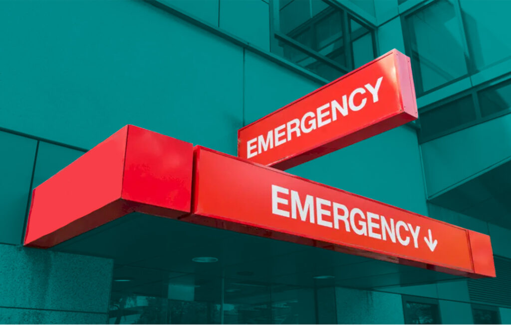

As anyone who has ever been to the emergency room can tell you, an ER visit is expensive. And it’s expensive under the best of circumstances where you have good health coverage. But when you go to the emergency room without insurance the price can very quickly get into the thousands.
Why Do So Many People Go to the Emergency Room Without Insurance?
If you don’t have insurance, you’re less likely to have a primary care physician, so you may feel your only options are urgent care centers and/or emergency rooms.
Even if you go to a non-ER urgent care center, the price can be very high. But if the problem strikes in the middle of the night – if you have a child who is not breathing well and you have no primary care provider to take your emergency phone call – then you are stuck going to the emergency room.
This problem is a vicious cycle because it means that the people with the most need – the people who can’t afford insurance coverage – are paying the high cost of urgent care. And the high cost of urgent care is very high indeed.
How Much Does an Uninsured ER Visit Cost?
The average cost of a visit to the emergency room without health insurance is $2,200. These costs vary by location and facility. ER costs also vary greatly by state – $623 in Maryland, $2318 in Texas, and $3102 in Florida.
Lack of price transparency makes it next to impossible to estimate the cost of an uninsured ER visit. You won’t know your final price until you get the bill after your visit.
Your ER bills break down this way:
- Triage fees: The nurse takes your vitals and assesses the level of care you need.
- Facility fees: These fees include your hospital room and bed, radiology and labs, etc.
- Professional fees: The fees pay the physicians and nurses who are treating you.
- Supply fees: These can include items such as physician’s gloves, the needles the lab uses, the sutures for stitches, and your hospital gowns.
Everything has a cost, and don’t expect any of it to be cheap. For example, the average ER cost of an X-ray is between $260 and $460, and that’s before the radiologist reads it. The average cost to get simple stitches is $500. Broken bones can be in the thousands, and if that broken bone needs surgery you could be looking at more than $10,000.
Alternatives to the Emergency Room
If you are having a true life-and-death emergency where seconds count, you need to go to the nearest emergency room. This could be the case with a heart attack, stroke, gunshot or stab wounds, not breathing, uncontrolled bleeding, loss of a limb, etc. However, if your situation is less serious and depending on the urgency and level of care you need, you may have some options. Considering these options ahead of time and becoming familiar with your local resources will help when you need medical care.
Choose a Non-Profit Hospital
Non-profit hospitals and medical facilities are required by federal law to offer income-based financial assistance, discounts, or charity care. Some for-profit facilities also have income-based discounts. Be sure and ask for an application from the ER. You can also check out hospital charity policies on their websites or check Dollar For, a website that helps you apply for hospital charity care for free.
Urgent Care Centers
Urgent care centers are less expensive than emergency rooms, but more expensive than primary care. They can treat urgent problems such as fever, cuts, injuries, sprains, infections, flu, etc. However, unlike nonprofit hospital ERs, they aren’t required to treat you regardless of insurance or ability to pay and are not regulated by the No Surprises Act.
Primary Care Resources
Primary healthcare saves you money by finding problems early on before they become bigger and more expensive to treat. This is where you get your checkups, immunizations, preventive care, and treat illnesses and health concerns that don’t require urgent or emergency treatment.
If you’re uninsured or underinsured, you can get primary healthcare from Community Health Clinics, Direct Primary Care (DCP), virtual care, and retail clinics. Depending on where you live, you may have additional local resources or nonprofit clinics. Learn more about these options in our articles, What if I Can’t Afford Health Insurance? and Cash for Healthcare and Options for the Underinsured and Uninsured.
What Can Be Done About the Price of Emergency Room Medical Care Costs?
If you don’t have an insurance company helping pay the costs (and even if you do) the medical bills at emergency rooms can be unreasonable at best. Urgent care clinics try to fill the gap, but they’re expensive too.
You need to learn how to negotiate the price of your medical bill, and that’s what Crush Medical Debt is here to teach you. We have a three-step system that is designed to help you lower the costs incurred by unavoidable medical conditions.
Takeaways
- Emergency healthcare is the most expensive level of healthcare.
- Urgent care is less expensive than ERs, but are not required to provide emergency care regardless of your ability to pay.
- Utilizing Community Care Centers, Direct Primary Care (DCP), retail health clinics, and local resources for primary care will save you money and catch health problems early.
- Learn to navigate and crush your medical bills with Crush Medical Debt.